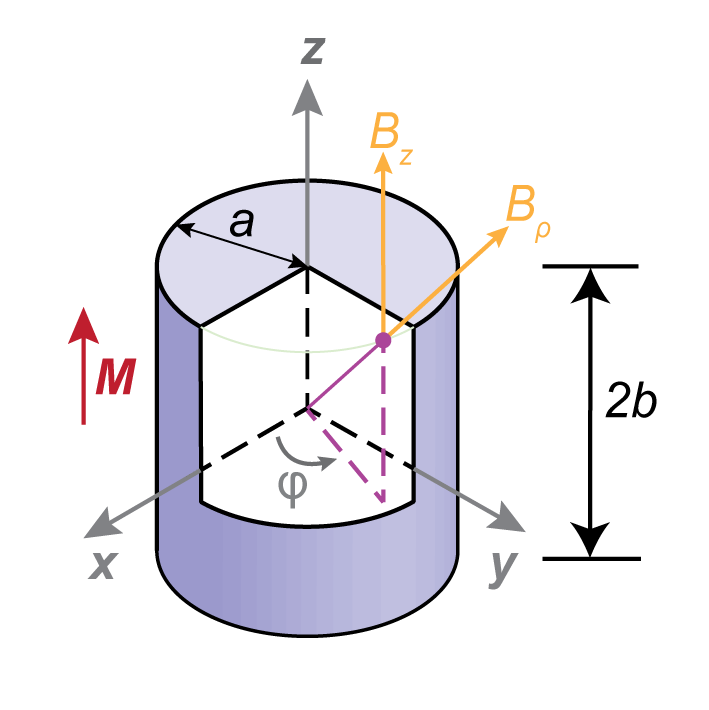
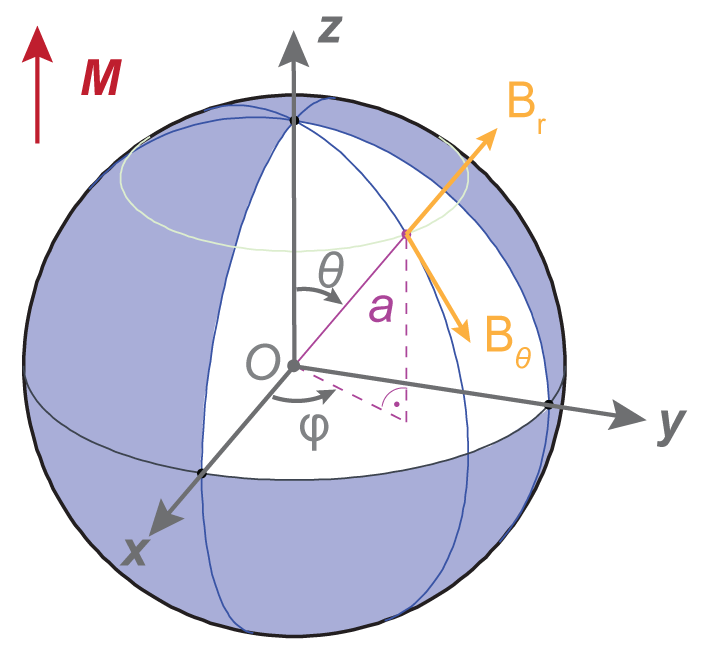

3D Magnets
Note
- SI Units with the Sommerfeld convetion are used for this discussion: \(\mathbf{B} = \mu_0 \left( \mathbf{H} + \mathbf{M} \right)\)1
- However, the Kennelly Convetion is used for the creation of each magnet object in the library: \(\mathbf{B} = \mu_0\mathbf{H} + \mathbf{J}\)1
- In free space \(\mathbf{B} = \mu_0 \mathbf{H}\)
- In magnetised bodies, the demagnetising field \(\mathbf{H_d} = - N \mathbf{M}\), where \(N\) is the demagnetising factor.
The derived equations for 3D magnets were performed using the Coulombic Charge model rather than the Amperian current model of the 2D systems. More correctly they are derived in terms of the \(H\) field rather than \(B\), but which in free space only differ by a factor \(\mu_0\), i.e. \(\mathbf{B} = \mu_0 \mathbf{H}\).
In the Kennelly convention of electromagnetic units every factor \(\mu_0 M_r\) can be replaced by \(J\) or \(J_r\).
Prisms/Cuboids

For a uniformly magnetised cuboid, used in our experiments, with dimensions \(2a \times 2b \times 2c\) magnetised in the \(x\)-direction is3
where the functions \(F_1\) and \(F_2\) are
For a bar magnetised in \(z\), the above equations can be rewritten by a 90˚ rotation about \(y\), leading to4
where the functions \(F_1\) and \(F_2\) are
Similar equations can be attained for a magnet magnetised in \(y\) by a 90˚ rotation of the first set of equations about the \(z\)-axis.
Cylinders/Solenoids

Recalling that the magnetic field due to a cylinder of length \(2b\) and radius \(a\), with a current \(I\) running through \(n\) turns of wire along the symmetry axis is:
Note
- This is equivalent to the equation in the Cylinder section, where \(\mu_0 n I \equiv \mu_0 M_r\)
- For an infinite solenoid, this reduces to \(B_z = \mu_0 n I\) at its center
For the general case, including off-axis points the field in cylindrical coordinates becomes
and
where:
and \(C\) is Bulirsch's 'cel' function5.
Bulirsch's complete elliptic integral
See NIST Handbook of Mathematical Functions6
The three standard Legendre forms of the complete elliptic integrals can be written using the generalised complete elliptic integral of Bulirsch:
\(K(k) = C(k_c, 1, 1, 1)\)
\(E(K) = C(k_c, 1, 1, k_c^2)\)
\(\Pi(n, k) = C(k_c, n+1, 1, 1)\)
A simple algorirthm for solving the elliptic integrals6 is provided by
pymagnet.utils._elliptic. It is vectorised and JIT compiled as a Numpy ufunc using
Numba for improved performance:
cel(kc, p, c, s)
Example
Here is an example of how to use it, for the special case of \(k_c = 1\) for the first complete elliptic integral, \(K(1)\):
\(C\left(1, 1, 1, 1 \right) = \pi/2\)
import numpy as np
from pymagnet.utils._elliptic import cel
cel_value = cel(1, 1, 1, 1)
print(np.allclose(cel_value, np.pi / 2.0))
Spheres

Outside a uniformly magnetised sphere8 of radius \(a\), the stray field is identical to a magnetic dipole, and has a convenient representation in spherical coordinates:
Meshes (STL)
Arbitrary — including non-convex — geometries are supported by importing a triangulated surface from an STL file. The same Coulombic charge model used for the analytic magnets above applies: for a uniformly magnetised body the volume charge density vanishes, so the field is generated entirely by the surface charge
which is evaluated per triangle. Each triangle of the mesh carries a uniform charge density given by the projection of the magnetisation onto its outward normal, and the total field is the sum over all triangles. Triangles lying parallel to \(\mathbf{J}\) carry no charge and are skipped.
Creating a mesh magnet
import pymagnet as pm
pm.reset()
magnet = pm.magnets.Mesh(
"bunny.stl",
Jr=1.0,
center=(0, 0, 0),
mesh_scale=1.0,
)
Parameters:
| Parameter | Type | Default | Description |
|---|---|---|---|
filename |
str | required | Path to the STL file to import |
Jr |
float | 1.0 |
Signed remanent magnetisation (T) |
center |
tuple | (0, 0, 0) |
Position of the magnet centre |
phi |
float | 90.0 |
Azimuthal angle of the magnetisation (degrees) |
theta |
float | 0.0 |
Polar angle of the magnetisation (degrees) |
mesh_scale |
float | 1.0 |
Scaling factor applied to the imported mesh |
Magnetisation and mesh rotation
The magnetisation direction is set by phi/theta. Rotating the mesh
itself via alpha/beta/gamma does not currently rotate
\(\mathbf{J}\) with it.
Calculating the field
import numpy as np
x = np.linspace(-70, 70, 30)
X, Y, Z = np.meshgrid(x, x, x, indexing="ij")
Bx, By, Bz = magnet.get_field(X, Y, Z)
Parameters:
| Parameter | Type | Default | Description |
|---|---|---|---|
x, y, z |
float/ndarray | required | Evaluation point coordinates |
parallel |
bool | True |
Use the parallel Numba kernel |
r_cut |
float | np.inf |
Distance cutoff (see below) |
Distance cutoff: r_cut
The cost of a mesh evaluation is \(O(N_\mathrm{tri} \times N_\mathrm{points})\),
which dominates runtime for large meshes. Because the contribution of a charged
triangle falls off with distance, triangles whose centroid lies farther than
r_cut from an evaluation point can be skipped:
Bx, By, Bz = magnet.get_field(X, Y, Z, r_cut=40.0)
r_cut is in the same length units as the mesh coordinates (normally mm). The
default, np.inf, performs no culling and is numerically exact.
r_cut trades accuracy for speed — and the trade is steep
Culling is an approximation. The surface charges of a closed magnetised body very nearly cancel when seen from a distance, so discarding some of them removes a large contribution relative to the small net field that remains. The error is therefore worst at points far from the magnet, which is exactly where the cutoff saves the most work.
Measured on Stanford_Bunny_10000.stl (10 000 triangles, a 30³ = 27 000 point
grid spanning ±70 mm, reference time 2.714 s) by
benchmarks/benchmark_rcut.py:
r_cut |
Median time | Speedup | nRMSE | Pointwise rel. RMS |
|---|---|---|---|---|
| 20 mm | 87.8 ms | 30.9× | 0.683 | 0.930 |
| 40 mm | 327.4 ms | 8.3× | 0.372 | 0.774 |
| 60 mm | 797.0 ms | 3.4× | 0.202 | 0.534 |
| 80 mm | 1.362 s | 2.0× | 0.121 | 0.344 |
| 100 mm | 1.941 s | 1.4× | 0.071 | 0.254 |
| 130 mm | 2.447 s | 1.1× | 0.017 | 0.089 |
| 160 mm | 2.562 s | 1.06× | 0.0015 | 0.0084 |
| 200 mm | 2.575 s | 1.05× | ~0 | ~0 |
where nRMSE is the RMS error normalised by the RMS of the reference field, and the last column is the RMS of the per-point relative error.
Read that table before reaching for r_cut. On this geometry the cutoffs that
are genuinely fast are also badly wrong — a 30× speedup comes with an error
comparable to the field itself — while the cutoffs accurate to a few percent are
barely faster than no cutoff at all. r_cut is worth using when the evaluation
region is small and close to the magnet compared with the extent of the mesh,
and it is not a general-purpose speed knob. Always validate against an
r_cut=np.inf reference for the geometry and evaluation grid you actually care
about.
Multiple meshes in one pass
get_total_field_mesh() concatenates the triangles of several meshes and
evaluates them in a single parallel pass, which avoids re-traversing the
evaluation grid once per magnet:
from pymagnet import get_total_field_mesh
m1 = pm.magnets.Mesh("left.stl", Jr=1.0, center=(-30, 0, 0))
m2 = pm.magnets.Mesh("right.stl", Jr=1.0, center=(30, 0, 0))
B = get_total_field_mesh([m1, m2], X, Y, Z)
print(B.x, B.y, B.z)
The result is numerically identical to summing the individual get_field()
calls. It returns a Field3 object rather than a tuple. An r_cut argument is
accepted and behaves as above.
Forces and torques
force, torque = magnet.get_force_torque(depth=4)
Each mesh triangle is recursively subdivided into \(4^\mathrm{depth}\) sub-triangles for the surface integration. See Forces & Torques for details.
Note
- SI Units with the Sommerfeld convetion are used for this discussion: \(\mathbf{B} = \mu_0 \left( \mathbf{H} + \mathbf{M} \right)\)1
- However, the Kennelly Convetion is used for the creation of each magnet object in the library: \(\mathbf{B} = \mu_0\mathbf{H} + \mathbf{J}\)1
- In free space \(\mathbf{B} = \mu_0 \mathbf{H}\)
- In magnetised bodies, the demagnetising field \(\mathbf{H_d} = - N \mathbf{M}\), where \(N\) is the demagnetising factor.
-
J. M. D. Coey, Magnetism and Magnetic Materials (Cambridge University Press, 2010). ↩↩↩↩
-
E. P. Furlani, Permanent Magnet and Electromechanical Devices (Academic Press, San Diego, 2001). ↩
-
Z. J. Yang, T. H. Johansen, H. Bratsberg, G. Helgesen, and A. T. Skjeltorp, Potential and Force between a Magnet and a Bulk Y1Ba2Cu3O7-δ Superconductor Studied by a Mechanical Pendulum, Superconductor Science and Technology 3, 591 (1990). ↩
-
J. M. Camacho and V. Sosa, Alternative Method to Calculate the Magnetic Field of Permanent Magnets with Azimuthal Symmetry, Revista Mexicana de Física E 59, 8 (2013). ↩
-
R. Bulirsch, Numerical Calculation of Elliptic Integrals and Elliptic Functions. III, Numer. Math. 13, 305 (1969). ↩
-
N. Derby and S. Olbert, Cylindrical Magnets and Ideal Solenoids, American Journal of Physics 78, 229 (2010). ↩
{kind=link}